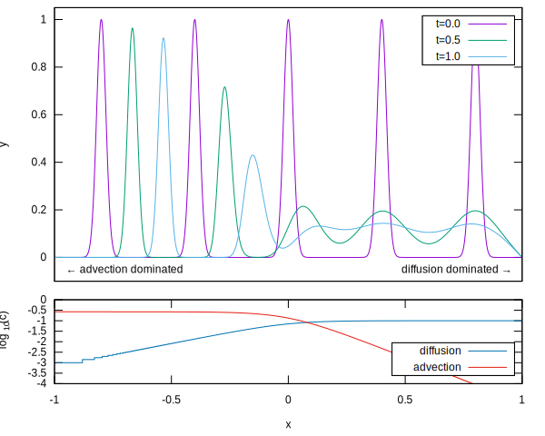

\[\renewcommand{\vec}[1]{{\bf #1}}\]
Fiadeiro-Veronis scheme
We start with the ODE,
\[D\partial_x^2 C - v \partial_x C = 0.\](1)
Pages 313-314 of Boudreau explains why the previous approaches lead to instabilities here. We need to interpolate between two methods to be stable under a wider set of regimes.
Fiadeiro and Veronis (1977) propose the following scheme:
\[{D \over {\Delta x^2}}\Big(C_{i+1} - 2C_{i} + C_{i-1}\Big) - {v \over {2\Delta x}}\Big((1-\sigma)C_{i+1} + 2\sigma C_i - (1+\sigma)C_{i-1}\Big) = 0,\](2)
where,
\[\sigma = \coth\Big({{v\Delta x} \over {2D}}\Big) - {{2D} \over {v \Delta x}}.\](3)
This means that when we are diffusion dominated (\(\sigma = 0\)), we have central differencing. When advection becomes dominant (\(\sigma = 1\)), then we have backwards differencing.
Now, let’s have a time-dependent equation,
\[\partial_t x = D\partial_x^2 C - v \partial_x C.\](4)
The Fiadeiro-Veronis scheme gives us a tridiagonal matrix when we solve using the implicit Euler method. Similar to when we solved the diffusion equation,
\[C_{j+1} = C_{j} + \Delta t \partial_t C|_{j+1},\](5)
and we can write the spatial discretisation as a vector \(\vec{C}_i\),
\[\vec{C}_{j+1} = \vec{C}_{j} + {{D \Delta t} \over {\Delta x^2}} A_{\rm diff} \vec{C}_{j+1} - {{v \Delta t} \over {2 \Delta x}} A_{\rm adv} \vec{C}_{j+1},\](6)
where \(A_{\rm diff}\) is the by now familiar \([1, -2, 1]\) tridiagonal matrix, and \(A_{\rm adv}\) has a similar structure, as
\[A_{\rm adv} = \begin{pmatrix} 2\sigma & 1-\sigma & 0 & 0 & \dots\\ -(1+\sigma) & 2\sigma & 1-\sigma & 0 & \dots\\ 0 & -(1+\sigma) & 2\sigma & 1-\sigma & \dots\\ 0 & 0 & -(1+\sigma) & 2\sigma & \dots\\ \vdots & \vdots & \vdots & \vdots & \ddots\\ \end{pmatrix}\](7)
Implementation
Let’s see how this behaves under variable \(D\) and \(v\) for our original problem. We define initial conditions with several spikes.
«adv-diff-constants»
const GRID_SIZE = 10000 # grid resolution
const TIME_STEPS = 10000 # number of timesteps
const SIGMA0 = 0.02 # width of peaks
const ADVECTION = 0.26667 # maximum of advection coeff.
const DIFFUSION = 0.01 # maximum of diffusion coeff.
const KAPPA = 0.1 # width of our sigmoid function«adv-diff»
times = LinRange(0.0, 1.0, TIME_STEPS+1)
positions = LinRange(-1.0, 1.0, GRID_SIZE+1)
delta_x = 2.0 / GRID_SIZE
delta_t = 1.0 / TIME_STEPS
y0 = zeros(Float64, GRID_SIZE+1)
for x in -0.8:0.4:0.8
y0 .+= exp.((positions .- x).^2 ./ (-2*SIGMA0^2))
endWe let \(D\) and \(v\) vary along the interval according to a sigmoid function,
«sigmoid»
function sigmoid(x, kappa=KAPPA)
1 / (1 + exp(-x / kappa))
end«adv-diff»
diff_coef = DIFFUSION * sigmoid.(positions)
adv_coef = ADVECTION * sigmoid.(-positions)We may rewrite the backwards Euler method to \(B C_{j+1} = C_{j}\), where
\[B = I - c_{\rm diff} A_{\rm diff} + c_{\rm adv} A_{\rm adv}.\](8)
«adv-diff»
c_d = diff_coef .* (delta_t / delta_x^2)
c_a = adv_coef .* (delta_t / (2 * delta_x))
c_f = (adv_coef ./ diff_coef) .* (delta_x / 2)
sigma = coth.(c_f) - 1 ./ c_f
B = Tridiagonal((c_a.*(-sigma .- 1) .- c_d)[2:end],
1 .+ 2 .* c_d + 2 .* c_a .* sigma,
(c_a.*(-sigma .+ 1) .- c_d)[1:end-1])We obtain the solution by iteratively solving for \(C_{j+1}\).
«adv-diff»
yn = FunctionIterator(y -> B \ y, y0)
result = Iterators.map(Snapshot, times, yn)Result
